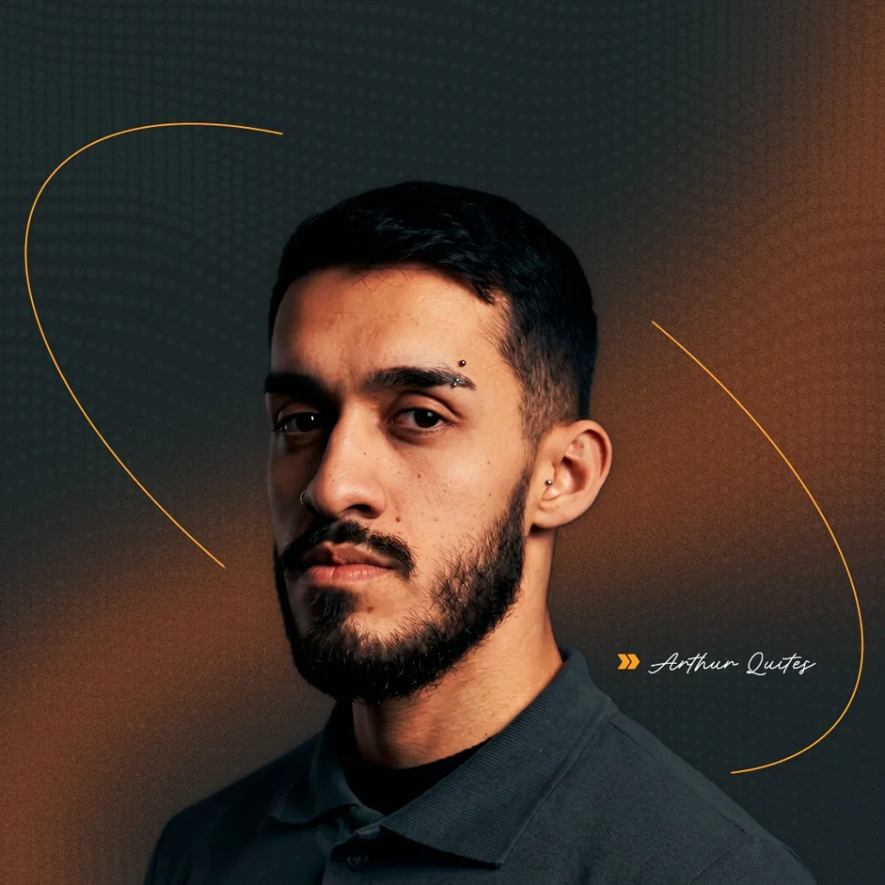

Arthur Quites
Diretor de Arte, Designer Institucional & Estrategista de Conteúdo
Construção de autoridade de marca, ecossistema visual de excelência e aceleração de audiência no mercado de engenharia pesada, construção civil e corporativo B2B. Especialista em unir governança de marca (Brand Book e normas da empresa) a estratégias orientadas a dados e crescimento orgânico.
Resultados & Indicadores de Performance (KPIs)
Pico de 36.797 visualizações em 30 dias (de ~5k anteriores).
Salto de 1.637 para 9.663 impressões para tomadores de decisão.
+411 novos seguidores/mês contra retração do concorrente direto.
Experiência Profissional
Histórico de AtuaçãoSoberana Construtora
Engenharia & InfraestruturaDiretor de Arte, Designer Institucional & Estrategista de Conteúdo
Responsável pela direção de arte integral, governança da marca corporativa e planejamento de comunicação digital da construtora, consolidando a autoridade da empresa para grandes licitações públicas e contratos corporativos privados.
SBR Engenharia
Construção & ProjetosDesigner de Marca & Ecossistema Digital
Estruturação da identidade visual completa para ambientes digitais da SBR Engenharia, concebendo templates canônicos modulares com foco em arquitetura de informação clara e alta retenção.
Arsenal Técnico & Competências
Stack ProfissionalIdentidade Visual & Sistemas de Marca
Elaboração de Brand Books corporativos, manuais de aplicação, tipografia institucional, paletas cromáticas funcionais, sistemas modulares de design e arquitetura de sinalização de canteiro.
Edição de Vídeo & Roteirização
Produção de vídeos corporativos para Reels e LinkedIn, roteirização com storytelling de engenharia, animações essenciais de tipografia e capas com área segura de exibição.
Inteligência de Algoritmo & Métricas B2B
Auditoria de dados analíticos, relatórios comparativos mensais para Diretoria Executiva, análise de concorrentes (benchmarking) e planejamento de distribuição orgânica.
Conformidade QSMS & Normas da Empresa
Experiência direta com padronização de frotas, materiais e sinalização corporativa conforme exigências de QSMS (Qualidade, Segurança, Meio Ambiente e Saúde) e diretrizes internas.
Formação Acadêmica
Ensino SuperiorPublicidade e Propaganda
Em cursoBacharelado · Comunicação Social
O curso de Publicidade e Propaganda capacita para o planejamento, criação e execução estratégica de comunicação de marcas. Abrange direção de arte, redação publicitária, gestão de marcas (branding), estudos de comportamento do consumidor, planejamento de mídia, pesquisa mercadológica e campanhas integradas nos meios digitais e tradicionais, conectando propósito de negócio a impacto comercial.
Por que minha atuação gera resultados acima da média?
1. Visão de Negócio & Não Apenas Estética
Cada peça visual é desenhada com objetivo claro: gerar autoridade para licitações, fechar parcerias B2B ou engajar colaboradores.
2. Compreensão Técnica de Engenharia
Facilidade em dialogar com engenheiros, compreender especificações de projetos pesados e traduzi-los em mensagens de alto apelo comercial.
3. Dados e Relatórios de Diretoria
Decisões embasadas em métricas reais, com acompanhamento de taxa de retenção, demografia qualificada e retorno do investimento.
Pronto para posicionar sua empresa como líder no mercado?
Disponível para novos projetos de direção de arte, consultorias de branding, reformulação de redes e contratos corporativos.